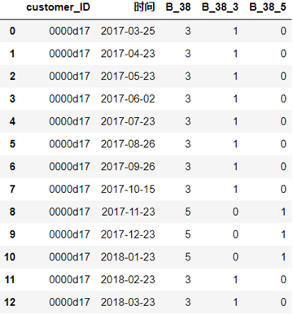
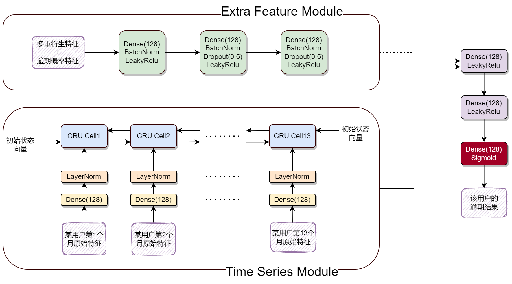

前处理（S1_denoise.py）
对 train 和 test 中的 D_63 进行 {'CR': 0, 'XZ': 1, 'XM': 2, 'CO': 3, 'CL': 4, 'XL': 5} 映射，对 D_64 特征进行 {np.nan: -1, 'O': 0, '-1': 1, 'R': 2, 'U': 3} 映射。
对 train 和 test 中除 D_63 和 D_64 以外的 186 个特征，作 np.floor(feat * 100) 的变换，相当于特征去噪。
将 train 保存为 train.feather，将 test 保存为 test.feather。
生成多重衍生特征（S2_manual_feature.py）
类别型特征

训练数据中某用户的 D_38 类别特征及其 one hot 展开一览
生成 cat_feature.feather：
- 分别读取 train.feather 和 test.feather 作为 train 和 test，train 和 test 拼接在一起形成 df。找到除 S_2（对账单日期）以外的所有消费特征 "S_*" 和支付特征 "P_*"，用 0 填充这些特征的缺失值
- 11 个原始类别特征做 one-hot 编码拼接到 df 右侧，并且原始类别特征不删除
- 对每个用户，作 one-hot 展开类别特征的 mean、std、sum、last

对该用户全量 13 个月 one hot 展开的类别特征做聚合统计
- 对每个用户，作 11 个原始类别特征的 nunique、last
- 对每个用户，生成对账单记录数量作为特征

对该用户全量 13 个月的原始类别特征做聚合统计
生成 last3_cat_feature.feather：
- 分别读取 train.feather 和 test.feather 作为 train 和 test，train 和 test 拼接在一起形成 df。找到除 S_2（对账单日期）以外的所有消费特征 "S_*" 和支付特征 "P_*"，用 0 填充这些特征的缺失值
- 只取 df 中每个用户近期的三条对账单记录作为新的 df，其余对账单记录全部删除
- 11 个原始类别特征做 one-hot 编码拼接到 df 右侧，并且原始类别特征不删除
- 对每个用户，作 one-hot 展开类别特征的 mean、std、sum、last

对该用户近 3 个月 one hot 展开的类别特征做聚合统计
- 对每个用户，作 11 个原始类别特征的 nunique、last
- 对每个用户，生成对账单记录数量作为特征

对该用户近 3 个月的原始类别特征做聚合统计
原始数值型特征

训练数据中某用户的 D_39 数值特征一览
生成 num_feature.feather：
- 分别读取 train.feather 和 test.feather 作为 train 和 test，train 和 test 拼接在一起形成 df。找到除 S_2（对账单日期）以外的所有消费特征 "S_*" 和支付特征 "P_*"，用 0 填充这些特征的缺失值
- 对这 177 个原始数值特征，作每个用户该特征的 mean、std、min、max、sum、last，并将生成的特征整除 0.01（提高精度）

该用户全量 13 个月的数据做聚合统计（这里演示没整除 0.01）
生成 last6_num_feature.feather：
- 分别读取 train.feather 和 test.feather 作为 train 和 test，train 和 test 拼接在一起形成 df。找到除 S_2（对账单日期）以外的所有消费特征 "S_*" 和支付特征 "P_*"，用 0 填充这些特征的缺失值
- 只取 df 中每个用户近期的六条对账单记录作为新的 df，其余对账单记录全部删除
- 对这 177 个原始数值特征，作每个用户该特征的 mean、std、min、max、sum、last，并将生成的特征整除 0.01

该用户近 6 个月的数据做聚合统计（这里演示没整除 0.01）
生成 last3_num_feature.feather：
- 分别读取 train.feather 和 test.feather 作为 train 和 test，train 和 test 拼接在一起形成 df。找到除 S_2（对账单日期）以外的所有消费特征 "S_*" 和支付特征 "P_*"，用 0 填充这些特征的缺失值
- 只取 df 中每个用户近期的三条对账单记录作为新的 df，其余对账单记录全部删除
- 对这 177 个原始数值特征，作每个用户该特征的 mean、std、min、max、sum、last，并将生成的特征整除 0.01

该用户近 3 个月的数据做聚合统计（这里演示没整除 0.01）
排序数值型特征
生成 rank_num_feature.feather：
- 分别读取 train.feather 和 test.feather 作为 train 和 test，train 和 test 拼接在一起形成 df。找到除 S_2（对账单日期）以外的所有消费特征 "S_*" 和支付特征 "P_*"，用 0 填充这些特征的缺失值
- 对 177 个原始数值型特征中的每个特征，作该特征在同一用户数条对账单记录中的 rank% 转化（比如某用户的“P_2”特征为 [0.2, 0.36, 0.1, 0.4]，则对应的 rank 为 [2, 3, 1, 4]，rank 百分比则为 [2/4, 3/4, 1/4, 4/4]，则该特征就从原先的 [0.2, 0.36, 0.1, 0.4] 转化为了 [2/4, 3/4, 1/4, 4/4]）
- 对这 177 个 rank% 转化后的数值特征，作每个用户该特征的 mean、std、min、max、sum、last，并将生成的特征整除 0.01

该用户经过 rank percentile 变换的 D_39 特征

该用户全量 13 个月的数据做聚合统计
生成 ym_rank_num_feature.feather：
- 分别读取 train.feather 和 test.feather 作为 train 和 test，train 和 test 拼接在一起形成 df。找到除 S_2（对账单日期）以外的所有消费特征 "S_*" 和支付特征 "P_*"，用 0 填充这些特征的缺失值
- 对 177 个原始数值型特征中的每个特征，作该特征在同年同月数条对账单记录中的 rank% 转化
- 对这 177 个 rank% 转化后的数值特征，作每个用户该特征的 mean、std、min、max、sum、last，并将生成的特征整除 0.01

同一年月的不同用户经过 rank percentile 变换的 D_39 特征

同一年月不同用户的数据做聚合统计（这里演示没整除 0.01）
差分数值型特征

训练数据中某用户的 D_39 特征的一阶差分
生成 diff_feature.feather：
- 分别读取 train.feather 和 test.feather 作为 train 和 test，train 和 test 拼接在一起形成 df。找到除 S_2（对账单日期）以外的所有消费特征 "S_*" 和支付特征 "P_*"，用 0 填充这些特征的缺失值
- 对每个用户的原始数值特征作 diff(1)，比如某用户的“P_2”特征为 [0.2, 0.36, 0.1, 0.4]，则差分后的该特征为 [NaN, 0.16, -0.26, 0.3]
- 对这 177 个新生成的 diff(1) 版数值特征，作每个用户该特征的 mean、std、min、max、sum、last，并将生成的特征整除 0.01

该用户全量 13 个月的数据做聚合统计（这里演示没整除 0.01）
生成 last3_diff_feature.feather：
- 分别读取 train.feather 和 test.feather 作为 train 和 test，train 和 test 拼接在一起形成 df。找到除 S_2（对账单日期）以外的所有消费特征 "S_*" 和支付特征 "P_*"，用 0 填充这些特征的缺失值
- 只取 df 中每个用户近期的三条对账单记录作为新的 df，其余对账单记录全部删除
- 对这 177 个新生成的 diff(1) 版数值特征，作每个用户该特征的 mean、std、min、max、sum、last，并将生成的特征整除 0.01

该用户近 3 个月的数据做聚合统计（这里演示没整除 0.01）
LGB生成的用户逾期概率特征（S3_series_feature.py）
原始的训练或测试数据中，每个用户最多会有 13 个对账单日期的数据（特征），但每个用户只有一个标签，即最后一个对账单日期之后 18 个月内是否（0 / 1）出现逾期的情况。作者将每个用户最后一个对账单日期的标签推广到了之前的所有日期，这样每个用户的数个对账单日期就都有了标签，因此作者将用户的每个对账单日期都作为一个独立的样本，基于当前对账单日期的特征，使用五折交叉验证 LGB 模型来预测该日期的标签，当然作者在数据集切分时使用了基于用户的 GroupKFold，避免了数据泄露的问题。

使用五折交叉验证每折训练得到的模型，对当前折的验证数据进行预测，其他折同理，这样就可以完成对训练数据的预测，生成 oof.csv。

标签

生成的逾期概率
将五折交叉验证的五个模型对测试集的预测结果简单平均，生成 submission.csv。
数据准备（S4_feature_combined.py）
生成 nn_series.feather，用于下面的第一版和第二版 GRU 建模：
- 分别读取 train.feather 和 test.feather 作为 train 和 test，train 和 test 拼接在一起形成 df。然后对 df 中的类别型特征作 one hot 展开，同时去除 S_2 特征（对账单日期）和原始的那些类别型特征
- 将 df 中所有列的值除以 100（可以理解为标准化），同时对所有的缺失值填充为 0
生成 all_feature.feather，用于下面的 LGB 建模：
- 将 S2_manual_feature.py 生成的 9 张衍生特征表横向拼接

- 再拼接上 S4_feature_combined.py 对 train.feather 和 test.feather 中每个用户生成的各对账单日期的逾期概率特征（将 oof.csv 和 submission.csv 竖向拼接）

生成 nn_all_feature.feather，用于下面的第二版 GRU 建模：
- 将 S2_manual_feature.py 生成的 9 张衍生特征表横向拼接，同时对拼接后宽表中的每个特征使用自定义的分箱函数进行分箱，将该特征值转化为所属分箱的序号，同时除以该特征的分箱数（相当于归一化）

- 再拼接上 S4_feature_combined.py 对 train.feather 和 test.feather 中每个用户生成的各对账单日期的逾期概率特征（将 oof.csv 和 submission.csv 竖向拼接），同时填充缺失值为 0
LGB 建模（S5_LGB_main.py）
使用 S4_feature_combined.py 中生成的 all_feature.feather 进行 LGB（基于 Dart 树）的训练、验证和推理。
GRU 建模（S6_NN_main.py）
使用 S4_feature_combined.py 中生成的 nn_series.feather 进行第一个 GRU 模型的训练、验证和推理，可以看出，第一个 GRU 模型只使用到了用户原始对账单数据中的时序信息。
使用 S4_feature_combined.py 中生成的 nn_series.feather 和 nn_all_feature.feather 进行第二个 GRU 模型的训练、验证和推理，相比第一个 GRU 模型，第二个 GRU 模型不仅使用到了原始对账单数据中的时序信息，还对每个用户添加了额外的特征进行表征，大幅提高了模型的效果。
两个 GRU 模型除了数据层面不一样，其余部分均一致。

集成（S7_ensemble.py）
作者生成了 4 组模型，每组模型都是 5 折交叉验证，因此会首先对组内 5 个模型的预测结果进行简单平均，得到该组模型的一个预测结果，最后将 4 组模型的预测结果进行加权集成。
第一组 LGB 模型，public：0.80044，private：0.80874，最后集成的权重为 0.3，该组模型是作者早期阶段的一个大杂烩，难以回溯。
第二组 LGB 模型，public：0.80052，private：0.80859，最后集成的权重为 0.35。
第三组 GRU 模型（即第一个 GRU 模型），public：0.79008，private：0.79997，最后代码里的集成权重为 0.15，但作者表述的该组模型权重为 0.1。
第四组 GRU 模型（即第二个 GRU 模型），public：0.79713，private：0.80454，最后代码里的集成权重为 0.1，但作者表述的该组模型权重为 0.15。
详见链接。